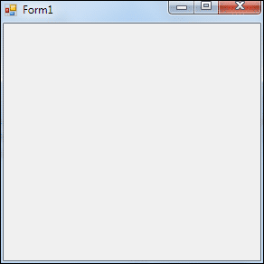
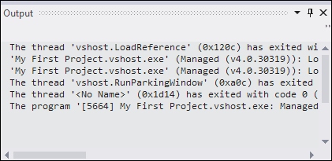

Visual Basic .NET Forms
The Default Form
In the Visual Basic NET design time environment, the first thing to concentrate on is that strange, big square in the top left. That's called a form. It's actually the pretty bit of your programme, the part that others will see when they launch your masterpiece. Granted, it doesn't look too attractive at the moment, but you'll soon discover ways to lick it into shape.
To run the form, try this:
-
From the menu bar, click Debug
-
From the drop down menu, click Start
-
Alternatively, press the F5 key on your keyboard
-
Your programme is launched
Congratulations! You have now created your very first programme. It should look like this:

Click the Red X on the form to stop it from running. You will then be returned to the software environment.
If you look at the bottom of the screen, you'll see an Output Window in Version 2012 of the VB software:

You can get rid of this by clicking the pin or the cross on the right-hand side:
If you compare the form when you create a new project with the one above when its running, you'll see that they look very similar. But the one above is actually a real programme, something you could package and sell to unsuspecting village idiots.
So what's going on? Why the two different views? Well, Visual Basic has two distinct environments, a Design environment and a Debug environment. Design Time is where you get to play about with the form, spruce it up, add textboxes, and buttons, and labels (and code, of course ); Debug is where you can test your programme and see how well it performs. Or doesn't perform, as is usually the case.
But don't worry about the terminology, for the time being. Just be aware that there's a two step process to VB programming: designing and debugging.
So, let's get on and do some designing! Before we can start designing a form, though, we need some tools. And where are tools kept? In a toolbox!
Click below for the next lesson (unless you fancy buying our VB .NET book!).